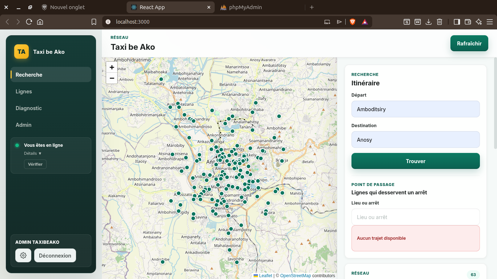

01
TAXI-BE AKO
Plateforme Web & Mobile • Mobilité Urbaine
Solution numérique pour optimiser la mobilité à Antananarivo : centralisation des itinéraires, arrêts et calcul de correspondances pour la planification efficace des trajets.